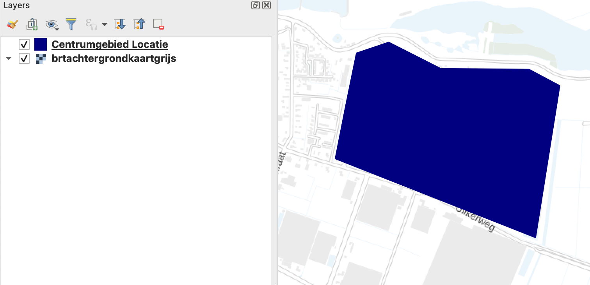
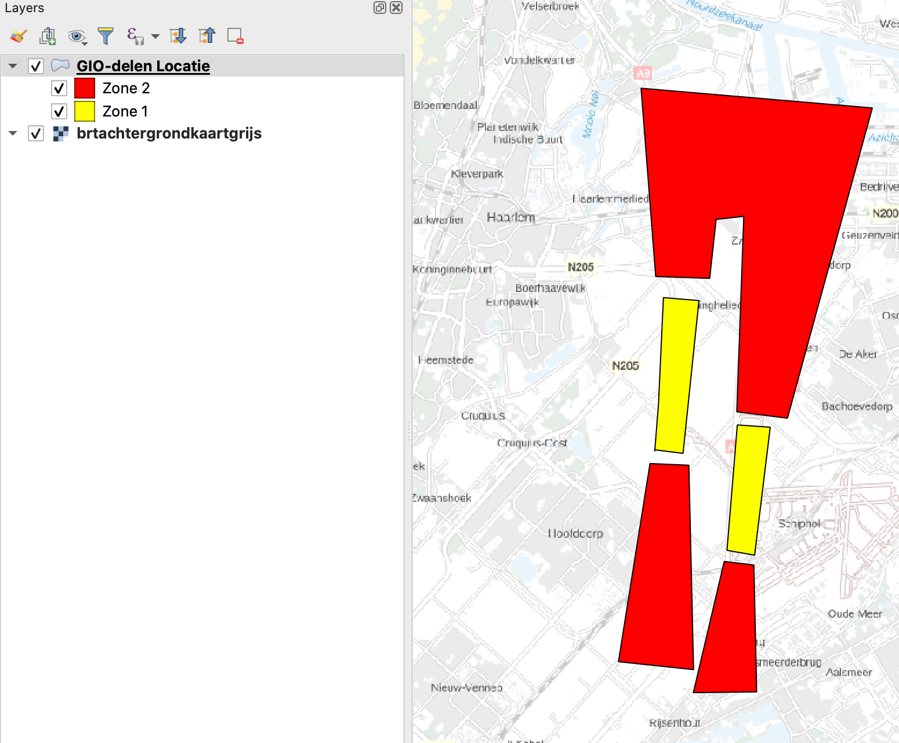
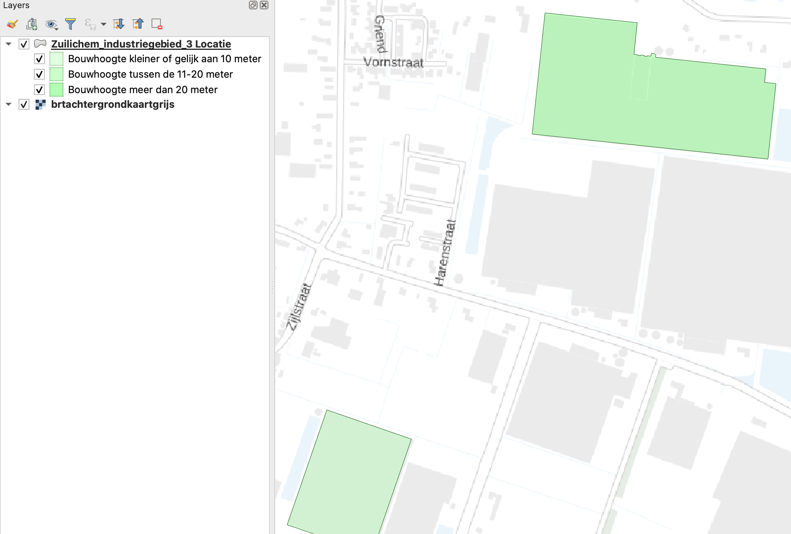

Symbolisatie
Is het voor de interpretatie van een GIO nuttig om een specifieke kleur in de afbeelding van de GIO te gebruiken, dan kan het bevoegd gezag (BG) symbolisatie (afbeeldingsinformatie) bijvoegen als metadata in een aparte STOP-module bij een GIO. Deze metadata bevat informatie over bijvoorbeeld de kleur die moet worden gebruikt om de geometrische data op de landingspagina van het GIO te tonen. Zo sluit de afbeelding zo veel mogelijk aan bij de afbeelding van het GIO bij de vaststelling van het GIO door het BG. Voor GIO’s met normwaarden en GIO’s met GIO-delen is symbolisatie verplicht.
De afbeelding van de geometrische data in de DSO-LV-viewer is service-informatie en is geen juridisch onderdeel van het besluit. De symbolisatie moet overigens wel correct zijn.
Subset SE-standaard
Voor de symbolisatie van een GIO gebruikt STOP een subset van de SE-standaard (Symbology Encoding) van het Open Geospatial Consortium. Wat tot deze subset behoort wordt verder uitgelegd in het Informatiemodel Symbolisatie. De subset is zo gekozen dat de symbolenbibliotheek STOP/TPOD ermee kan worden afgebeeld.
Symbolenbibliotheek STOP/TPOD
Vanaf de inwerkingtreding van de Omgevingswet moet voor Omgevingswetbesluiten worden gebruikgemaakt van de symbolisatie zoals beschreven in de symbolenbibliotheek van het presentatiemodel STOP/TPOD. Geonovum beheert deze bibliotheek, die ook conformeert aan de SE-standaard.
Wat is symbolisatie?
Symbolisatie is een (set) regel(s) die voorschrijft hoe een geometrisch object moet worden afgebeeld. Deze objecten kunnen zijn:
gebieden (zoals een natuurgebied, geluidzone of woonwijk)
punten (zoals een boom, mast of meetpunt).
lijnen (zoals een spoorlijn of weg).
Een symbolisatieregel geeft aan voor welke objecten deze regel geldt en specificeert de bijbehorende afbeeldingsinformatie. De specificiteit kan men voor kwantitatieve normwaarden enigszins zelf bepalen door opgave van grotere of kleinere waardenreeksen met identieke symbolisatie. Voor GIO-delen en kwalitatieve normwaarden moet voor elk deel respectievelijk elke waarde aparte symbolisatie worden opgegeven. Het is mogelijk om een specifieke regel te maken (zoals "de locaties van groep "3" zijn geel") of juist een generiekere regel (zoals "alle gebieden zijn lichtgroen"). De laatste optie kan alleen als men het GIO als geheel symboliseert.
Onderdelen symbolisatie
Een (set) symbolisatieregel(s) heeft:
het rootelement
FeatureTypeStyle, met als kinderenhet element
FeatureTypeName, geeft de naam van de feature type waarop de symbolisatie van toepassing is. Deze heeft in STOP altijd de waardegeo:Locatie,het element
SemanticTypeIdentifier, geeft aan op welk element de afbeeldingsinformatie wordt toegepast. Toegestane waarden:geo:geometrie: symbolisatieregel voor het hele GIOgeo:groepID: symbolisatieregels voor elk GIO-deelgeo:kwalitatieveNormwaarde: symbolisatieregels voor elke kwalitatieve normwaardegeo:kwantitatieveNormwaarde: symbosliatieregels voor (ranges van) kwantitatieve normwaarden
De namespace prefix (
geo:) is verplicht, maar variabel en moet zijn gedeclareerd.een of meer elementen
Rulemet render-instructies met voorwaarden. Elke Rule heeft een:Name, die aangeeft waar de regel voor geldt.Description, waarvan deTitlegebruikt wordt in de legenda.Filter, die de geometrische objecten selecteert waarop de regel toegepast moet worden. In STOP worden een beperkt aantal filteropties ondersteund. Het filter kan alleen worden toegepast als het GIO normwaarden of GIO-delen heeft. Dit zijn:is gelijk aan: voor GIO-delen, kwalitatieve en kwantitatieve normwaarden.voor kwantitatieve normwaarden:
kleiner dan X,tussen X en Y,groter dan X,groter of gelijk aan X èn kleiner dan Y,
Symbolizer, de afbeeldingsvorm die de door het filter geselecteerde objecten moeten krijgen. Een Symbolizer-element is een:LineSymbolizervoor een lijn.PointSymbolizervoor een punt.PolygonSymbolizervoor een gebied.Bij meerdere vormen (dus meerdere symbolizers) wordt het painters-model-principe toegepast. Dit betekent dat de eerste vorm de onderste laag wordt.
De symbolizer bevat opmaakinformatie via onder meer de volgende elementen:
naam, met de symboolcode uit de symbolenbibliotheek.
opvullingskleur (
Fill),omlijningskleur (
Stroke)
GIO-elementen met symbolisatie
De volgende GIO-elementen kunnen symbolisatie krijgen:
(optioneel) het GIO als geheel, als het geen normwaarden of GIO-delen bevat.
(verplicht) een groep (GIO-deel), via het element
geo:groepID.(verplicht) een (reeks) kwantitatieve normwaarden, via het element
KwantitatieveNormwaarde.(verplicht) een kwalitatieve normwaarde, via het element
KwalitatieveNormwaarde.
De legenda (verplicht bij normwaarden en GIO-delen) wordt automatisch samengesteld uit de aangeleverde symbolisatie informatie. De legenda hoeft men dus niet apart van symbolisatie te voorzien.
Het is niet mogelijk om een afwijkende symbolisatie te geven aan één locatie of om context-GIO's te symboliseren. Alle locaties in een GIO (of GIO-deel) zijn juridisch gelijk. Een afwijkend afbeelding van één locatie kan de indruk wekken dat dit niet het geval is. Als het juridisch nodig is om één locatie afzonderlijk af te beelden, dan wordt deze locatie in een afzonderlijke GIO of afzonderlijk GIO-deel opgenomen.
XML-codering van symbolisatie
GIO als geheel
Bevat het GIO geen GIO-delen of norm, dan kan er één symbolisatie meegegeven worden voor alle locaties in het GIO.
Voorbeeld
Om de symbolisatieregel te laten gelden voor het hele GIO, heeft de SemanticTypeIdentifier de waarde geo:geometrie. Het af te beelden object is een gebied, dus wordt de PolygonSymbolizer gebruikt. Het Name-element blijft leeg.
<FeatureTypeName>geo:Locatie</FeatureTypeName>
<SemanticTypeIdentifier>geo:geometrie</SemanticTypeIdentifier>
<Rule>
</Name>
</Description>
<PolygonSymbolizer>
<Fill>
<SvgParameter name="fill">#000080</SvgParameter>
</Fill>
</PolygonSymbolizer>
</Rule>
</FeatureTypeStyle>Dit heeft het volgende resultaat:
Groep (GIO-deel)
Bevat het GIO GIO-delen, dan moet elke groep symbolisatie krijgen.
Voorbeeld
Een GIO heeft de GIO-delen Zone1 en Zone2. Elke groep moet een eigen symbolisatie krijgen. Dit doet men door bij SemanticTypeIdentifier als waarde geo:groepID in te vullen. Elke groep krijgt vervolgens een eigen Rule. In het Name-element in de Rule vult men de groepID in van de betreffende groep. Vervolgens wordt met het Filter-element alle locaties geselecteerd met een groepID-attribuut met de waarde zone1 of zone2. Aangezien het om gebieden gaat, wordt de PolygonSymbolizer gebruikt. Het Name-element bevat een symboolcode, en Fill en Stroke worden gebruikt om de gebieden van vul- en belijningsopmaak te voorzien.
<FeatureTypeStyle xmlns:ogc="http://www.opengis.net/ogc">
<!-- Verbeeldingsinformatie voor een GIO zones rond Schiphol -->
<FeatureTypeName>geo:Locatie</FeatureTypeName>
<SemanticTypeIdentifier>geo:groepID</SemanticTypeIdentifier>
<Rule>
<Name>Zone 2</Name>
<Description>
<Title>Aanvliegroute</Title>
</Description>
<ogc:Filter>
<ogc:PropertyIsEqualTo>
<ogc:PropertyName>groepID</ogc:PropertyName>
<ogc:Literal>zone2</ogc:Literal>
</ogc:PropertyIsEqualTo>
</ogc:Filter>
<PolygonSymbolizer>
<Name>vsg025</Name> <!-- symboolcode uit de symbolenbibliotheek -->
<Fill>
<SvgParameter name="fill">#ff0000</SvgParameter>
<SvgParameter name="fill-opacity">0.8</SvgParameter>
</Fill>
<Stroke>
<SvgParameter name="stroke">#000001</SvgParameter>
<SvgParameter name="stroke-opacity">1</SvgParameter>
<SvgParameter name="stroke-width">1</SvgParameter>
<SvgParameter name="stroke-linejoin">round</SvgParameter>
</Stroke>
</PolygonSymbolizer>
</Rule>
<Rule>
<Name>Zone 1</Name>
<Description>
<Title>Landingsbaan</Title>
</Description>
<ogc:Filter>
<ogc:PropertyIsEqualTo>
<ogc:PropertyName>groepID</ogc:PropertyName>
<ogc:Literal>zone1</ogc:Literal>
</ogc:PropertyIsEqualTo>
</ogc:Filter>
<PolygonSymbolizer>
<Name>vsg026</Name> <!-- symboolcode uit de symbolisatiebibliotheek -->
<Fill>
<SvgParameter name="fill">#ffff00</SvgParameter>
<SvgParameter name="fill-opacity">0.8</SvgParameter>
</Fill>
<Stroke>
<SvgParameter name="stroke">#000001</SvgParameter>
<SvgParameter name="stroke-opacity">1</SvgParameter>
<SvgParameter name="stroke-width">1</SvgParameter>
<SvgParameter name="stroke-linejoin">round</SvgParameter>
</Stroke>
</PolygonSymbolizer>
</Rule>
</FeatureTypeStyle>Dit ziet er dan als volgt uit:

GIO met normwaarden
Bevat het GIO normwaarden, dan moet per normwaarde worden aangegeven hoe het GIO wordt afgebeeld.
Kwalitatieve normwaarden
Dit gebeurt op dezelfde wijze als bij een GIO met GIO-delen. De SemanticTypeIdentifier is dan geo:kwalitatieveNormwaarde en in het filter wordt kwalitatieveNormwaarde gebruikt.
Kwantitatieve normwaarden
Voor kwantitatieve normwaarden kan een regel voor een reeks normwaarden worden opgegeven.
Voorbeeld
Een GIO met een aparte symbolisatie voor:
alle gebieden met een normwaarde onder de 10 en
alle gebieden met een normwaarde tussen de 10 en 20.
Dit gebeurt op dezelfde wijze als bij een GIO met GIO-delen. De SemanticTypeIdentifier is dan geo:kwantitatieveNormwaarde en in het filter wordt kwantitatieveNormwaarde gebruikt.
<FeatureTypeStyle>
<!-- Verbeeldingsinformatie voor GIO met bouwhoogtes onder de 10 en tussen 10 en 20 -->
<FeatureTypeName>geo:Locatie</FeatureTypeName>
<SemanticTypeIdentifier>geo:kwantitatieveNormwaarde</SemanticTypeIdentifier>
<Rule>
<Name>Bouwhoogte onder de 10<Name>
</Description>
<ogc:Filter>
<ogc:PropertyIsLessThan>
<ogc:PropertyName>kwantitatieveNormwaarde</ogc:PropertyName>
<ogc:Literal>10</ogc:Literal>
</ogc:PropertyIsLessThan>
</ogc:Filter>
<PolygonSymbolizer>
<Fill>
<SvgParameter name="fill">#96ff96</SvgParameter>
</Fill>
</PolygonSymbolizer>
</Rule>
<Rule>
<Name>Bouwhoogte tussen de 10 en 20 (inclusief)</Name>
</Description>
<ogc:Filter>
<ogc:PropertyIsBetween>
<ogc:PropertyName>kwantitatieveNormwaarde</ogc:PropertyName>
<ogc:LowerBoundary>
<ogc:Literal>10</ogc:Literal>
</ogc:LowerBoundary>
<ogc:UpperBoundary>
<ogc:Literal>20</ogc:Literal>
</ogc:UpperBoundary>
</ogc:PropertyIsBetween>
</ogc:Filter>
<PolygonSymbolizer>
<Fill>
<SvgParameter name="fill">#4bff4b</SvgParameter>
</Fill>
</PolygonSymbolizer>
</Rule>
</FeatureTypeStyle>Dit kan er dan als volgt uitzien:

Legenda
Een GIO met normwaarden of GIO-delen moet altijd worden afgebeeld met een legenda. De tekst van deze legenda moet daarom worden opgenomen bij de symbolisatie, zie onderstaand voorbeeld.
Voorbeeld
Het Rule-element van de symbolisatie krijgt een Description-element met daarin een Title- (verplicht) en een Abstract-element, zie de schemadocumentatie.
...
<Rule>
<Description>
<Title>Stiltegebied</Title> <!-- Tekst voor legenda -->
<Abstract>Begrenzing van het stiltegebied</Abstract> <!-- toelichting op legenda tekst -->
</Description>
...
</Rule>
...Dit voorbeeldbestand is hier te vinden.